Self-initiated demonstration on public data
Case study · PostGIS · dbt · MCP
Jacksonville Property & Flood Risk
GIS · Spatial Data · AI Integration Engineering
Duval County parcels, assessor records, FEMA flood zones and state sales data in PostGIS, with dbt-tested models and an MCP server that lets a local AI agent answer property and flood-risk questions.
Problem
Jacksonville property questions (what is this parcel worth, is it in a flood zone, what sold nearby) need county parcels, the assessor tax roll, FEMA flood zones and state sales records joined together. Those sources arrive as shapefiles, pipe-delimited text and REST services, with invalid geometries, duplicate addresses and inconsistent ZIPs. The goal: load them into one trustworthy PostGIS database without silently losing a row, then let an AI agent answer plain-English questions over it safely.
Data sources
- Duval County parcel GIS (
Parcels.shp), City of Jacksonville / Duval County public records - Duval County Property Appraiser real estate tax roll, pipe-delimited
- FEMA National Flood Hazard Layer (public domain), downloaded by
load_flood.pyfrom FEMA's ArcGIS REST service - Florida Department of Revenue sales data file and land-use codes
Architecture


Key decisions
- Repair geometry with
make_valid, never edit the source. Parcels are repaired at load time and invalid/missing geometry counts are printed before load; the source shapefile is never modified. - One projected CRS: EPSG:2236 (Florida East, US feet). Parcels and FEMA zones share it, so
ST_Areareturns square feet and overlay percentages are meaningful. - Raw → clean → QC tables for flood zones. Every repaired shape is compared to its raw original by area, and the load prints row loss and area lost.
- Parameterized SQL in every MCP tool. Tools pass user input as
%sparameters to psycopg, never string-formatted SQL, and cap result sizes. - Tool design over model choice. Adding a
zip_statstool let the agent compare ZIPs by median instead of sampling listings (README lesson learned). - Local model, no API cost.
agent.pyruns a tool-calling loop on Ollama; the same server also works in VS Code Copilot. - dbt-tested models.
stg_addresses,stg_salesandproperty_summarywith 13 data tests on everydbt build. - No owner names published. The public explorer shows address, market and assessed value only.
Verified results
addresses_qcSource: jax-property-mcp READMEproperty_summary (one row per parcel)Source: jax-property-mcp READMEShow the work
flood_risk MCP tool: parameterized PostGIS overlay (SQL)
@mcp.tool()
def flood_risk(strap: str) -> list[dict]:
"""FEMA flood zones touching a parcel, given its strap (property ID).
Returns each zone, whether it's a high-risk Special Flood Hazard Area (sfha = 'True'),
and what percent of the parcel it covers. No rows means the parcel is outside the mapped zones."""
sql = """
SELECT f.fld_zone, f.zone_subty, f.sfha, f.static_bfe,
ROUND((100 * SUM(ST_Area(ST_Intersection(p.geometry, f.geom)))
/ NULLIF(ST_Area(ST_Union(p.geometry)), 0))::numeric, 1) AS pct_of_parcel
FROM parcels p
JOIN flood_zones f ON ST_Intersects(p.geometry, f.geom)
WHERE p.strap = %s
GROUP BY f.fld_zone, f.zone_subty, f.sfha, f.static_bfe
ORDER BY pct_of_parcel DESC
"""
return run(sql, (strap,))FEMA load quality check: compare every repaired shape to its raw original (SQL)
# 3. CLEAN table: repaired copy, linked back to RAW by raw_id
c.execute("""
DROP TABLE IF EXISTS flood_zones;
CREATE TABLE flood_zones AS
SELECT raw_id, fld_zone, zone_subty, (sfha_tf = 'T') AS sfha, static_bfe,
ST_IsValid(geom) AS was_valid,
ST_Multi(ST_CollectionExtract(ST_MakeValid(geom), 3))::geometry(MultiPolygon, 2236) AS geom
FROM flood_zones_raw;
CREATE INDEX flood_zones_geom_idx ON flood_zones USING gist (geom);
CREATE INDEX IF NOT EXISTS parcels_geom_idx ON parcels USING gist (geometry);""")
# 4. QUALITY CHECKS: compare every clean shape to its raw original
c.execute("""
DROP TABLE IF EXISTS flood_zones_qc;
CREATE TABLE flood_zones_qc AS
SELECT r.raw_id, r.fld_zone, ST_GeometryType(r.geom) AS raw_type, z.was_valid,
ST_Area(ST_MakeValid(r.geom)) AS raw_area_sqft, ST_Area(z.geom) AS clean_area_sqft,
ST_IsEmpty(z.geom) AS became_empty
FROM flood_zones_raw r JOIN flood_zones z USING (raw_id)
WHERE NOT z.was_valid OR ST_IsEmpty(z.geom)
OR abs(ST_Area(ST_MakeValid(r.geom)) - ST_Area(z.geom)) > 1;""")
q = c.execute("""
SELECT (SELECT count(*) FROM flood_zones_raw),
(SELECT count(*) FROM flood_zones),
(SELECT count(*) FROM flood_zones WHERE NOT was_valid),
(SELECT count(*) FROM flood_zones WHERE ST_IsEmpty(geom)),
(SELECT coalesce(sum(raw_area_sqft - clean_area_sqft), 0) FROM flood_zones_qc),
(SELECT sum(ST_Area(geom)) FROM flood_zones)""").fetchone()
print("\n=== QUALITY REPORT ===")
print(f"features from FEMA: {total} (missing geometry: {no_geom})")
print(f"raw rows loaded: {q[0]}")
print(f"clean rows: {q[1]} (row loss: {q[0] - q[1]})")
print(f"shapes needing repair: {q[2]}")
print(f"shapes that became empty:{q[3]}")
print(f"area lost in repair: {q[4]:,.0f} sq ft of {q[5]:,.0f} total ({100 * q[4] / q[5]:.5f}%)")Parcel geometry repair with make_valid (Python)
def repair_geometry(geometry):
if geometry is None:
return None
if not geometry.is_valid:
geometry = make_valid(geometry)
if isinstance(geometry, Polygon):
return MultiPolygon([geometry])
if isinstance(geometry, MultiPolygon):
return geometry
if geometry.geom_type == "GeometryCollection":
polygons = []
for geom in geometry.geoms:
if isinstance(geom, Polygon):
polygons.append(geom)
elif isinstance(geom, MultiPolygon):
polygons.extend(list(geom.geoms))
if polygons:
return MultiPolygon(polygons)
return NoneSource: jax-property-intelligence/load_parcels.py lines 28–55
Next steps
- Surface the
flood_riskresults on the public Riverside explorer as a flood-zone overlay. - Run the tool-choice evals (
eval.py,hard_eval.py) automatically on each change. - Extend the explorer beyond Riverside using the same PostGIS tables.
Links
Demo / testing only, not authoritative. Figures on this page are copied from the linked repositories' READMEs.